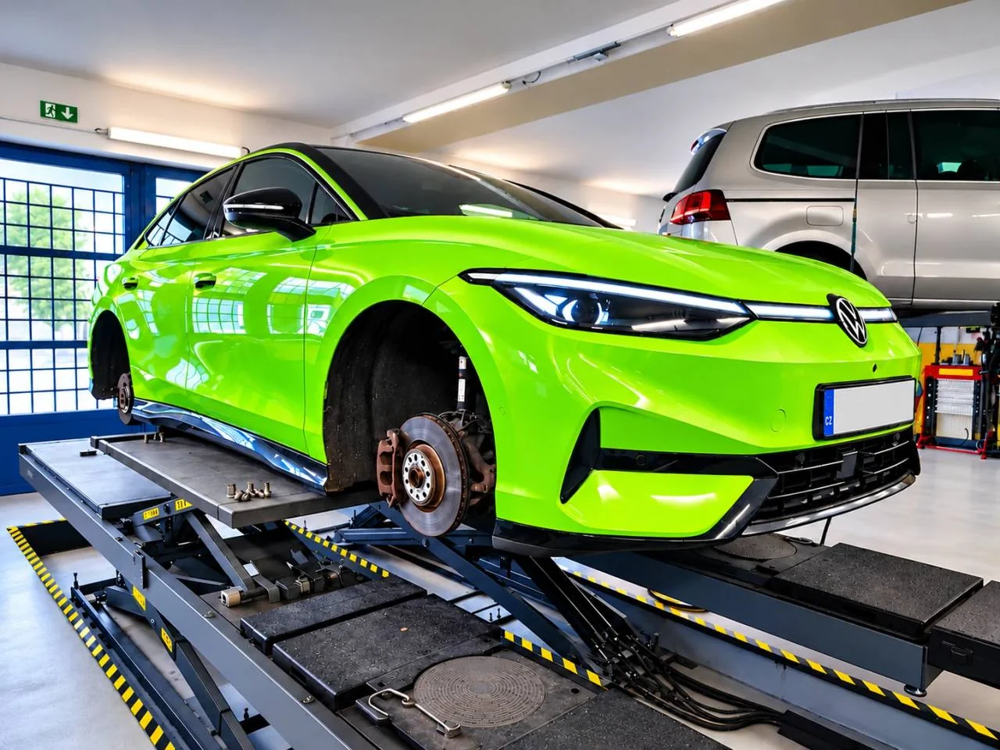

Brake and suspension diagnostics
Professional inspection of brake systems, shock absorbers and wheel suspension
Correct brake and chassis function is essential for vehicle safety, stability and handling. Some defects may not be noticeable during normal driving and cannot be reliably detected by visual inspection alone.
At J&S SERVIS in Statenice near Prague, we carry out professional checks using a BEISSBARTH test lane with a VAS 6360 roller brake tester, suspension tester and hydraulic play detector for checking wheel suspension joints.

Measuring braking forces - BEISSBARTH VAS 6360
The roller brake tester measures braking forces at individual wheels and allows differences between the left and right sides of an axle to be assessed.
Brake inspection range
- Measurement of braking forces of individual wheels.
- Evaluation of the symmetry of the braking effect on the axle.
- Checking the effect of the service and parking brake.
- Assessment of how braking forces vary and detection of uneven or unstable braking performance.
Detected deviations may point to faults in brake mechanisms, their control or other system components. We evaluate the measured values and, if necessary, supplement them with a mechanical check to determine the cause of the defect.
Diagnostics of suspension shock absorbers
Properly functioning suspension helps keep the tyres in contact with the road and affects stability, handling and braking behaviour.
With the shock absorber tester, we assess the response of the suspension during test excitation and compare the results of the left and right side of the axle. The test helps to reveal differences between the wheels and suspicions of insufficient suspension function; it also provides the basis for subsequent mechanical inspection.
We assess the results with regard to chassis construction, tyre condition and pressure, as well as vehicle load. The measurement alone does not determine the exact amount of wear or the remaining life of the damper.

Checking for play in wheel and axle suspension
The hydraulic shaker loads the wheel suspension with a controlled movement and makes it possible to monitor excessive play in mechanical components.
Suspension components inspected
- Suspension ball joints and connecting components.
- Suspension arm bushes and mounts.
- Steering joints and mechanical steering components.
- Anti-roll bar bushes and drop links.
- Other axle components for excessive play and mechanical damage.
The inspection helps to detect defects associated with knocking, vehicle instability, imprecise steering or uneven tyre wear.
Professional assessment and subsequent 3D wheel alignment
We evaluate the measured values and detected mechanical deficiencies in connection with the manifestations of the defect and the technical condition of the vehicle. Based on the results, we will recommend further inspection or repair.
Suspension faults must be repaired before accurate wheel alignment. Depending on the repair, this may be followed by 3D wheel alignment checks and adjustment according to the technical data of the vehicle manufacturer.
When do we recommend brake and chassis diagnostics?
We recommend a professional inspection in case of uneven braking, vehicle instability, knocking in the chassis, impaired handling or irregular tyre wear. It is also suitable for checking the technical condition of a used vehicle and after repairs to brake or chassis components.
Diagnostics on the test lane is a separately billed service. We determine the specific scope of the inspection according to the technical condition of the vehicle and the required operations.
Before booking
When booking, describe whether the problem occurs under braking, over bumps or at a particular speed. Tell us about recent suspension work and the wheels currently fitted.